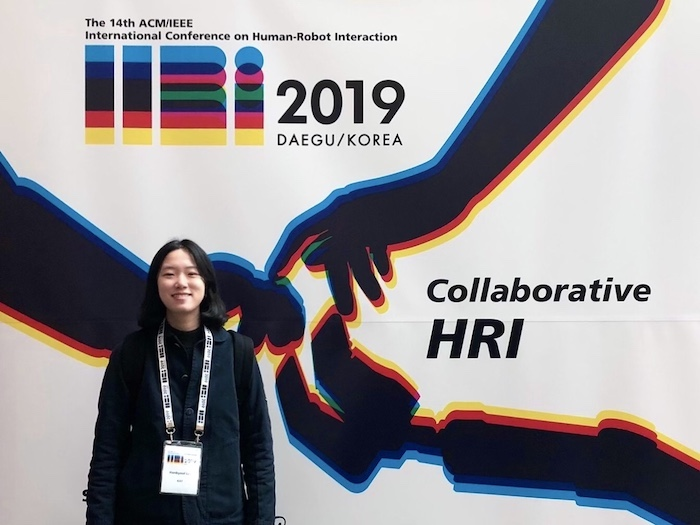

From user research to development

안녕하세요. UX 엔지니어 이한별입니다.
주로 Human-Robot Interaction(HRI)와 Human-Computer Interaction(HCI) 분야에서 인터랙션 디자인, 개발, 리서치를 진행하였습니다.
학부에서 OpenGL과 OpenCV 기반의 컴퓨터 그래픽스와 비전 프로그래밍을 공부하였고,
대학원에서 아두이노와 라즈베리파이를 사용한 HCI 디자인을 연구하고 사용자 조사 방법론을 배웠습니다.
졸업 이후, KIST AIㆍ로봇연구소 지능로봇연구단에서 HRI 디자인과 정량 데이터 분석을 진행하였습니다.
진행했던 프로젝트를 통해, HCI Korea Creative Award 대상을 수상하였고, HRI, IROS, RO-MAN을 비롯한 여러 국제 로봇 학회와 IASDR 국제 디자인 학회에서 논문을 게재하였습니다.
현재, 프로젝트의 유저 리서치부터 기술 개발까지 직접 진행하는 UX 엔지니어의 역할을 수행하고 있습니다.
특히, 빠르고 반복적인 프로토타입 구현과 협업에 강점을 가지고 있습니다.
기술을 바탕으로 프로세스 전반에 걸쳐 다양한 직군을 연결하는 역할을 목표로 삼고 있습니다.